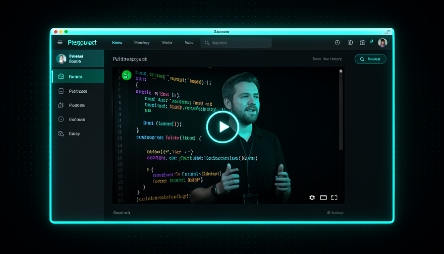
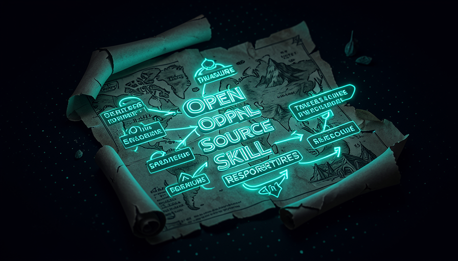
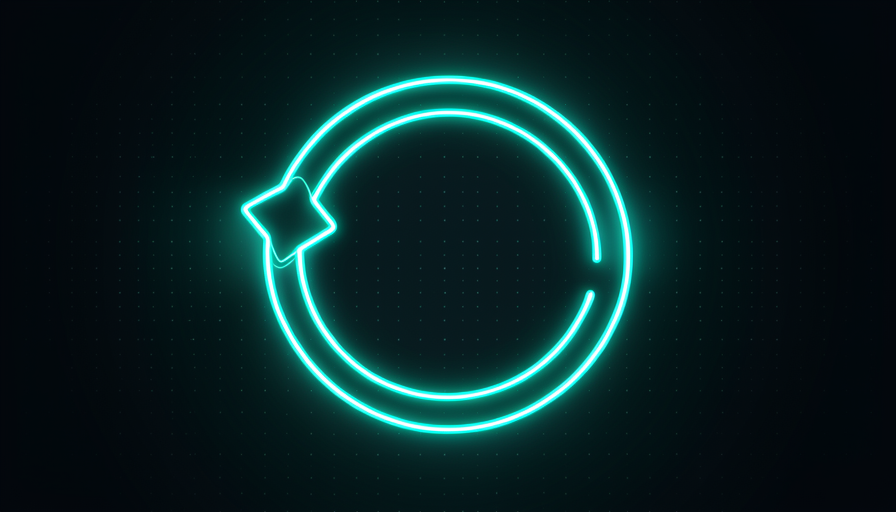

📖 Glossário vivo (leia antes — volte sempre que precisar)
Este é o módulo final: aqui você junta o ciclo de review com o "onde achar". Estes são os termos novos deste tema:
🎬 Vídeo walkthrough + TTS
🧠 Imagine assim: um pedreiro termina um cômodo e, em vez de te mandar a planta com rabiscos, grava um vídeo curto andando pela casa: "olha, aqui ficou a tomada, abri a janela, a porta fecha direitinho" — e narra enquanto mostra. Em 40 segundos você entende mais do que lendo 50 páginas. É exatamente isso que a IA faz com cada mudança de tela.
Pocock descreve o que ele chama de review fluido: em qualquer mudança de front-end, a IA grava um vídeo de si mesma andando pela mudança — ela abre a página nova, clica nos botões, mostra a coisa funcionando de verdade. Em cima desse vídeo, ela chama uma ferramenta de TTS (text-to-speech) e narra o que está acontecendo. O resultado: o PR chega até você com um vídeo da coisa funcionando, com locução.
O porquê é direto: ver é mais rápido que ler. Em vez de abrir 12 arquivos de código e tentar imaginar o comportamento na cabeça, você aperta play e vê a mudança rodando, com alguém te explicando. Nas palavras dele: "em qualquer mudança de front-end, a IA grava um vídeo de si mesma andando pela mudança, chama TTS e narra por cima — então o PR tem um vídeo da coisa funcionando." E ele é honesto sobre o estágio: "we're scratching the surface" (mal arranhamos a superfície). O erro comum é achar que isso é firula: na prática, é o que transforma uma revisão de 20 minutos numa de 1 minuto.
A IA produz a evidência visual; você só assiste e aprova.

Em 1 frase: em vez de ler o código, você assiste um vídeo narrado da mudança funcionando dentro do próprio PR.
Indo mais fundo (opcional): por que vídeo e não um print?
Um print mostra um estado parado; o comportamento (a animação, o que acontece ao clicar, o estado de erro) some. O vídeo captura a interação — e a narração TTS contextualiza ("agora estou enviando o formulário vazio pra mostrar a validação"). É a diferença entre ver a foto de um carro e ver o carro andando: só um prova que ele funciona.
⚡ Otimizar o review humano
🧠 Imagine assim: um gerente que recebe 20 relatórios separados toda manhã vai enlouquecer. Mas se a equipe junta tudo num resumo de uma página com os pontos em comum, ele decide rápido. O segredo não é trabalhar mais — é deixar a revisão mais barata pra quem revisa.
O lema de Pocock aqui é claro: "optimize for human review, make it faster" (otimize o review humano, deixe-o mais rápido). O review fluido é uma forma; outra é não revisar 20 correções pequenas uma a uma. Em vez disso, ele sugere gerar um HTML no estilo da teach skill com os padrões comuns dos bugs — um resumo que mostra o que mais quebra. Assim você revisa o padrão, não cada item solto, e ainda aprende a melhorar o sistema.
Tem um ponto importante por trás disso: "GitHub não foi feito pra era agêntica". As ferramentas de review foram desenhadas pra humanos revisando humanos, em ritmo humano. Quando um agente abre dezenas de PRs por dia, esse fluxo trava. Por isso vale a pena investir no que torna a revisão veloz — vídeo narrado, resumos de padrões, agrupamento. O erro comum é manter o ritual de revisar tudo linha por linha como antes: você vira o gargalo do próprio sistema.
🔬 Exemplo resolvido: 18 fixes de null-check viram 1 review
Cenário: durante a noite, o agente abriu 18 PRs corrigindo erros de "valor nulo". Dois jeitos de lidar:
Sem otimizar
Você abre os 18 PRs, lê o diff de cada um, aprova um por um. ~2 horas, atenção fritando, e você não enxerga o padrão por trás.
Review otimizado
O agente gera um HTML: "todos vêm de campos opcionais da API sem default". Você lê 1 página, vê a causa raiz, aprova em lote e cria 1 skill que evita a classe inteira de bug. ~10 min.
Em 1 frase: não revise 20 coisas pequenas — revise o padrão delas, e otimize a revisão pra ela ser veloz.
Recuperação rápida: qual é o objetivo do "review fluido"?
📦 mattpocock/skills
🧠 Imagine assim: você não precisa inventar receita de bolo do zero — existe um caderno de receitas testadas, de graça, que alguém que cozinha muito bem já deixou pronto. Pegar a receita pronta e adaptar ao seu forno é muito mais esperto que começar com farinha e ovo.
O primeiro lugar de "onde achar" é o repositório público github.com/mattpocock/skills — o caderno de skills do próprio Pocock. É de lá que vêm as skills que ele demonstra no vídeo: a teach skill, a grill-me, as do pipeline (grill-me → PRD → issues). Como são procedures, você instala, usa e customiza — não precisa concordar com tudo, adapta ao seu projeto.
O porquê de começar por skills prontas: elas já carregam conhecimento embutido (princípios de ensino, perguntas adversariais, formato de PRD). Você ganha meses de tentativa-e-erro de graça. E como funcionam em múltiplos agentes (Claude Code, Codex etc.), você não fica preso a uma ferramenta — coerente com o "setup agent-agnostic" da Trilha 1. O erro comum é instalar tudo de uma vez e entupir o contexto (lembra da Trilha 1.6: cada skill cobra um pedaço da janela de contexto). Traga só o que vai usar.

Em 1 frase: github.com/mattpocock/skills é o caderno de procedures prontas do Pocock — pegue, use e adapte.
🌐 aihero.dev / aihero.dev/skills
🧠 Imagine assim: além do caderno de receitas, o chef tem um site e um boletim semanal onde explica as técnicas por trás de cada prato e avisa quando inventa um novo. Quem assina nunca fica desatualizado. É o complemento do repositório.
O segundo lugar é o aihero.dev (e a seção aihero.dev/skills) — o site de conteúdo do Pocock, com uma newsletter. Enquanto o GitHub guarda o código das skills, o aihero.dev guarda o contexto: por que cada skill existe, como ela foi pensada, e o que há de novo. É lá que aparecem skills atualizadas e explicações — pense no GitHub como a despensa e no aihero.dev como o livro que ensina a cozinhar.
O porquê de seguir os dois: skills evoluem rápido. O repositório te dá a versão atual; a newsletter te avisa quando algo muda e por quê. Assinar é a forma barata de manter seu harness afinado sem ter que vigiar o GitHub todo dia. O erro comum é copiar uma skill uma vez e nunca mais olhar — você perde melhorias e fica com uma versão velha de algo que o autor já refinou. Acompanhar a fonte é parte de "construir patrimônio", não "alugar" (Trilha 1).
Em 1 frase: o GitHub te dá o código; o aihero.dev (e sua newsletter) te dá o porquê e as atualizações.
⌨️ npx skills latest add
🧠 Imagine assim: instalar uma skill é como baixar um app na loja: você digita um comando, escolhe qual quer numa lista, e pronto — ele já está disponível pra usar. Sem montar nada na mão.
A forma de instalar é um único comando: npx skills latest add. O npx baixa e roda o instalador na hora; ele te mostra uma lista de skills disponíveis e você escolhe qual adicionar (por exemplo, a teach skill). Foi exatamente assim que Pocock instalou a teach skill no vídeo. E o melhor: "funciona em Claude Code, Codex etc." — o mesmo comando, vários agentes.
Um detalhe de bastidor que Pocock conta: ele roda Claude Code com Opus 4.8, medium effort (não usa o Fable), e espera cerca de 1 mês antes de adotar um modelo novo — fez isso com o Opus 4.5. Ou seja: o comando é estável e agnóstico; a escolha de modelo é uma decisão separada e tranquila. O erro comum é sair adicionando dezenas de skills "por garantia": cada uma vaza descrição no contexto. Adicione uma, use de verdade, e só então a próxima. Copie o comando abaixo:
# 1) INSTALAR uma skill (escolha na lista — ex.: a teach skill) # funciona em Claude Code, Codex etc. npx skills latest add # 2) ONDE ACHAR skills prontas (o "caderno de receitas" do Pocock): # - GitHub (o código): https://github.com/mattpocock/skills # - Site + contexto: https://aihero.dev # - Skills + newsletter: https://aihero.dev/skills # Dica: adicione UMA skill, use de verdade, depois a próxima. # Setup do Matt: Claude Code + Opus 4.8 (medium effort); espera ~1 mês p/ adotar modelo novo.

Em 1 frase: npx skills latest add abre uma lista, você escolhe a skill, e ela funciona em Claude Code, Codex e cia.
Recuperação rápida: como Pocock instala uma skill (ex.: a teach)?
🚀 Os 2 primeiros passos hoje
🧠 Imagine assim: antes de redecorar a casa cheia de tranqueira, você esvazia o cômodo pra ver o espaço de verdade — e só então traz de volta, peça por peça, o que realmente faz falta. Faxina primeiro, mobília depois.
O fechamento de Pocock são dois passos pra fazer hoje. Passo 1 — o reset: delete tudo — toda skill, plugin, MCP server, seu CLAUDE.md, agents.md → volte ao zero absoluto e observe o agente. "Everyone bloats up their context window with too much stuff" (todo mundo entope a janela de contexto). No modo básico você vê o que o agente realmente faz — e o que faz falta.
Passo 2 — recamadar com procedures: vá adicionando por cima, e que sejam procedures (não abilities), instaladas de um jeito que você possa customizar e experimentar. Traga de volta só o que sentir falta (ex.: o brainstorming do superpowers). Depois é o ciclo de sempre: ache problemas → ache soluções → delegue a implementação a um agente AFK. "AFK is just incredible — takes a bit of setup, but then it goes crazy." O erro comum é pular o reset e seguir empilhando: você nunca enxerga o que de fato precisa.
PASSO 1 — RESET (volte ao zero e observe): [ ] deletar TODAS as skills [ ] deletar plugins e MCP servers [ ] deletar CLAUDE.md e agents.md [ ] rodar uma tarefa real e OBSERVAR o agente puro (o que falta?) PASSO 2 — RECAMADAR (só o necessário, e procedures): [ ] trazer de volta só o que senti falta (ex.: brainstorming do superpowers) [ ] instalar como PROCEDURE customizável: npx skills latest add [ ] achar problemas → achar soluções → delegar a implementação a um agente AFK
Em 1 frase: resete ao zero e observe; depois recamade só com procedures customizáveis — e delegue o resto ao AFK.
🎉 Parabéns — você concluiu o HARNESS!
Você percorreu as 5 trilhas do método Matt Pocock: dos fundamentos (motor × chassi) às habilidades humanas, das skills de IA às técnicas avançadas, até as soluções prontas pra copiar. Agora você tem o vocabulário e as receitas. Este último módulo fechou o ciclo: deixar o review humano fluido e saber exatamente onde buscar skills pra continuar evoluindo.
npx skills latest add e escolha na lista; funciona em Claude Code, Codex etc.E agora?
Faça os 2 passos de hoje no seu projeto real. Volte às soluções da Trilha 5 sempre que precisar copiar uma receita — elas foram feitas pra isso. Lembre da tese-mãe: o segredo não está no modelo, está no harness que você controla. Bom proveito! 🏎️